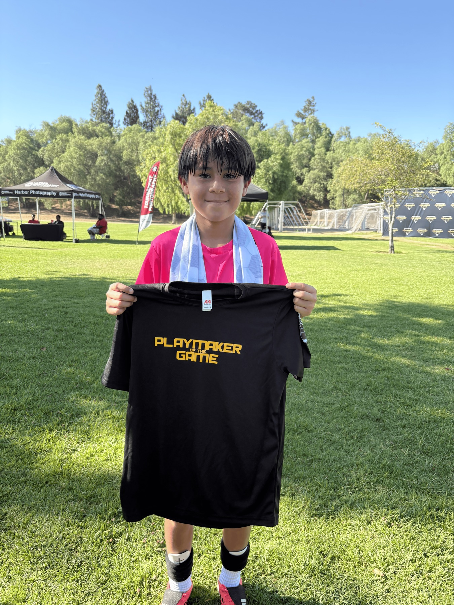
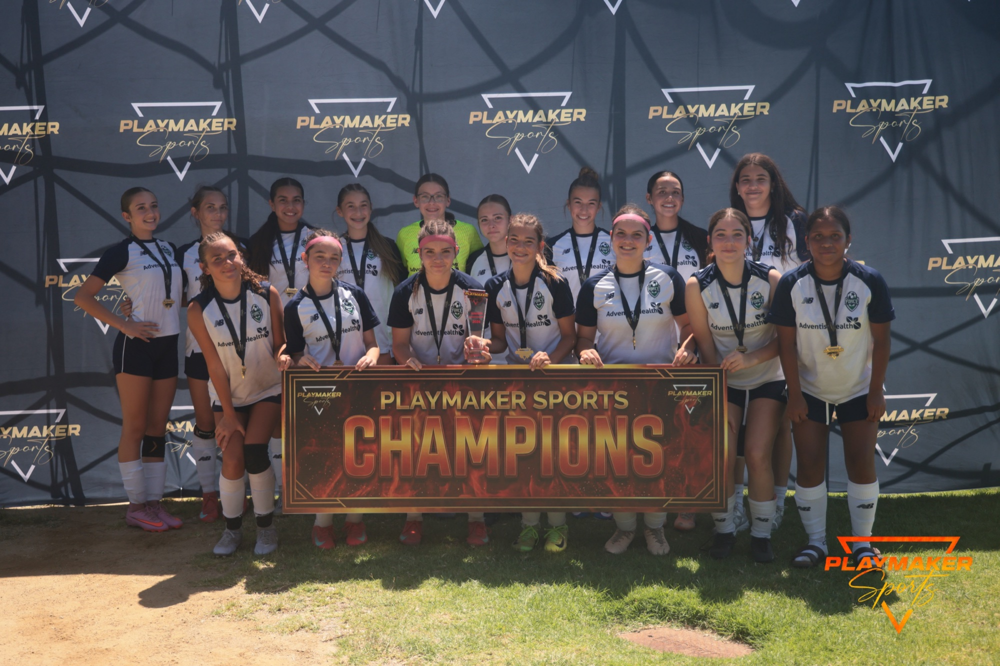

Playmaker Sports' Summer Championship returned in 2026 with a weekend of competitive youth soccer, bringing together 100 teams for more than 150 games across 20 groups, with 20 champions and 20 finalists crowned throughout the event.
This year's tournament also introduced a new tradition: the Playmaker of the Game award.
Recognizing More Than the Score
The Playmaker of the Game award was created to recognize players who stood out not only through their performance on the field, but also through their sportsmanship, teamwork, effort, and overall impact on their team.
Throughout the tournament, standout players were selected to receive a special Playmaker of the Game shirt as recognition from Playmaker Sports. The goal was to celebrate the qualities that make a true playmaker — both as a player and as a teammate.

The award added another opportunity to recognize players throughout the weekend and will continue to be a special part of Playmaker Sports tournaments moving forward.
100 Teams, 150+ Games and 20 Champions
The Summer Championship featured 100 teams competing in 20 groups, resulting in more than 150 games played throughout the weekend.

With 20 groups came 20 champions and 20 finalists, giving teams from across the region the opportunity to compete for a championship while creating a memorable summer tournament experience for players, coaches, and families.
Despite the competitive nature of the event, the focus remained on creating a positive and well-run environment for everyone involved.
Keeping Players Safe in the Summer Heat
Summer temperatures brought challenging conditions throughout the weekend, making player safety a major priority.
Every game included a water break midway through each half to allow players to properly hydrate and recover from the heat. To ensure players did not lose playing time because of the additional breaks, one minute was added to each half.
The tournament's referees did an excellent job managing the conditions, implementing the water breaks and keeping games running smoothly throughout the weekend.
Athletic trainers were also stationed at multiple locations throughout the tournament complex, providing coverage for players, coaches, families, and other attendees. With the heat creating additional risks, the medical teams were frequently called upon to assist with injuries, accidents, and cases of overheating.
Their presence helped ensure that anyone who needed attention could receive it quickly and that player and attendee safety remained a priority throughout the event.
A Full Summer Tournament Experience
The tournament also featured a variety of vendors throughout the weekend, giving players and families more to experience between games. Food vendors provided meals and refreshments, while vendors offered items including grip socks, soccer apparel, clothing, and desserts.
Soccer City was also on site with merchandise and soccer gear for families to browse throughout the weekend.
Angel City joined the tournament as well, setting up a tent and providing free giveaways to players and families.
A Summer-Themed Championship
The summer theme carried through to the tournament's awards. Playmaker Sports provided summer-themed medals and trophies, designed to represent the energy and heat of the Summer Championship.
From the awards to the vendors and the competition on the field, the tournament was built around creating a true summer soccer experience.
Looking Ahead
The 2026 Summer Championship brought together 100 teams, more than 150 games, and thousands of players, coaches, families, referees, vendors, and event staff for a memorable weekend of soccer.
Most importantly, the tournament introduced the Playmaker of the Game — an award designed to recognize players who demonstrate what Playmaker Sports is all about: performance, teamwork, sportsmanship, and being a positive influence on the field.
As Playmaker Sports continues to grow its tournaments, the Playmaker of the Game award will remain one of the ways we recognize the players who make the game better for everyone around them.